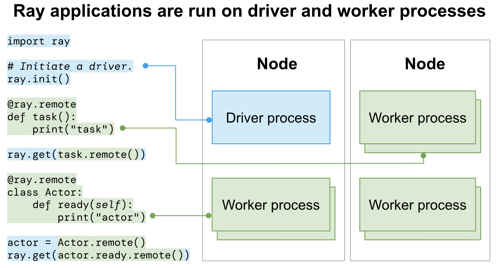

Key Concepts
Contents
Key Concepts#
This section covers key concepts for monitoring and debugging tools and features in Ray.
Dashboard (Web UI)#
Ray provides a web-based dashboard to help users monitor and debug Ray applications and Clusters.
See Getting Started for more details about the Dashboard.
Ray States#
Ray States refer to the state of various Ray entities (e.g., Actor, Task, Object, etc.). Ray 2.0 and later versions support querying the states of entities with the CLI and Python APIs
The following command lists all the Actors from the Cluster:
ray list actors
======== List: 2022-07-23 21:29:39.323925 ========
Stats:
------------------------------
Total: 2
Table:
------------------------------
ACTOR_ID CLASS_NAME NAME PID STATE
0 31405554844820381c2f0f8501000000 Actor 96956 ALIVE
1 f36758a9f8871a9ca993b1d201000000 Actor 96955 ALIVE
View Monitoring with the CLI or SDK for more details.
Metrics#
Ray collects and exposes the physical stats (e.g., CPU, memory, GRAM, disk, and network usage of each node), internal stats (e.g., number of Actors in the cluster, number of Worker failures in the Cluster), and custom application metrics (e.g., metrics defined by users). All stats can be exported as time series data (to Prometheus by default) and used to monitor the Cluster over time.
View Metrics View for where to view the metrics in Ray Dashboard. View collecting metrics for how to collect metrics from Ray Clusters.
Exceptions#
Creating a new Task or submitting an Actor Task generates an object reference. When ray.get is called on the Object Reference,
the API raises an exception if anything goes wrong with a related Task, Actor or Object. For example,
RayTaskErroris raised when an error from user code throws an exception.RayActorErroris raised when an Actor is dead (by a system failure, such as a node failure, or a user-level failure, such as an exception from__init__method).RuntimeEnvSetupErroris raised when the Actor or Task can’t be started because a runtime environment failed to be created.
See Exceptions Reference for more details.
Debugger#
Ray has a built-in debugger for debugging your distributed applications. Set breakpoints in Ray Tasks and Actors, and when hitting the breakpoint, drop into a PDB session to:
Inspect variables in that context
Step within a Task or Actor
Move up or down the stack
View Ray Debugger for more details.
Profiling#
Profiling is way of analyzing the performance of an application by sampling the resource usage of it. Ray supports various profiling tools:
CPU profiling for Worker processes, including integration with py-spy and cProfile
Memory profiling for Worker processes with memray
Built in Task and Actor profiling tool called ray timeline
Ray doesn’t provide native integration with GPU profiling tools. Try running GPU profilers like Pytorch Profiler without Ray to identify the issues.
Tracing#
To help debug and monitor Ray applications, Ray supports distributed tracing (integration with OpenTelemetry) across Tasks and Actors.
See Ray Tracing for more details.
Application logs#
Logs are important for general monitoring and debugging. For distributed Ray applications, logs are even more important but more complicated at the same time. A Ray application runs both on Driver and Worker processes (or even across multiple machines) and the logs of these processes are the main sources of application logs.
Driver logs#
An entry point of Ray applications that calls ray.init() is called a Driver.
All the Driver logs are handled in the same way as normal Python programs.
Worker logs (stdout and stderr)#
Ray executes Tasks or Actors remotely within Ray’s Worker processes. Task and Actor logs are captured in the Worker stdout and stderr.
Ray has special support to improve the visibility of stdout and stderr produced by Worker processes so that the Ray program appears like a non-distributed program, also known as “Worker log redirection to driver”.
Ray directs stdout and stderr from all Tasks and Actors to the Worker log files, including any log messages generated by the Worker. See logging directory and file structure to understand the Ray logging structure.
The Driver reads the Worker log files (where the stdout and stderr of all Tasks and Actors sit) and sends the log records to its own stdout and stderr (also known as “Worker logs being redirected to Driver output”).
For the following code:
import ray
# Initiate a driver.
ray.init()
@ray.remote
def task_foo():
print("task!")
ray.get(task.remote())
Ray Task
task_fooruns on a Ray Worker process. Stringtask!is saved into the corresponding Workerstdoutlog file.The Driver reads the Worker log file and sends it to its
stdout(terminal) where you should be able to see the stringtask!.
When logs are printed, the process id (pid) and an IP address of the node that executes Tasks or Actors are printed together. Here is the output:
(pid=45601) task!
Actor log messages look like the following by default:
(MyActor pid=480956) actor log message
By default, all stdout and stderr of Tasks and Actors are redirected to the Driver output. View Configuring Logging for how to disable this feature.
Job logs#
Ray applications are usually run as Ray Jobs. Worker logs of Ray Jobs are always captured in the Ray logging directory while Driver logs are not.
Driver logs are captured only for Ray Jobs submitted via Jobs API. Find the captured Driver logs with the Dashboard UI, CLI (using the ray job logs CLI command), or the Python SDK (JobSubmissionClient.get_logs() or JobSubmissionClient.tail_job_logs()).
Note
View the Driver logs in your terminal or Jupyter Notebooks if you run Ray Jobs by executing the Ray Driver on the Head node directly or connecting via Ray Client.